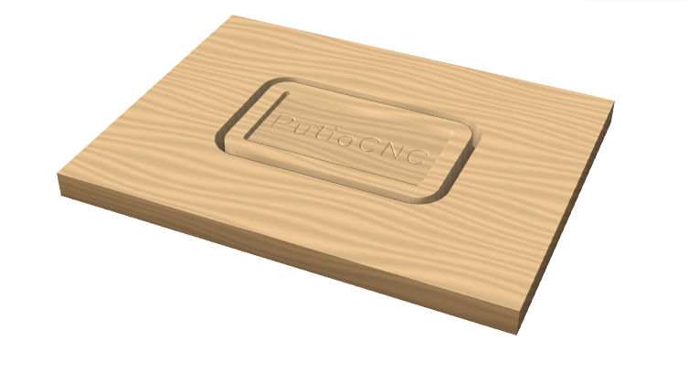
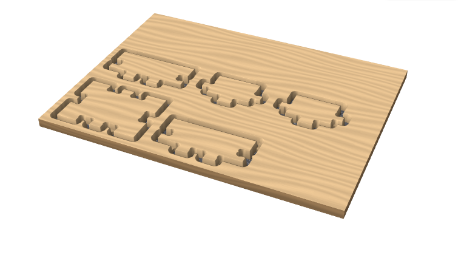
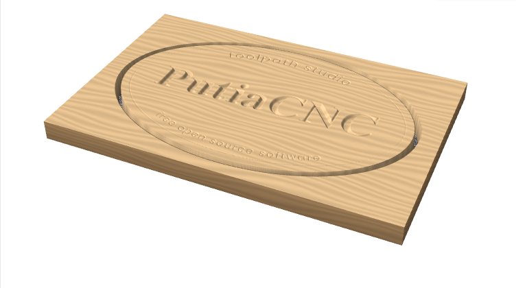
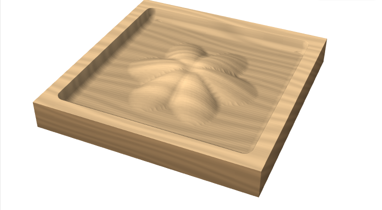
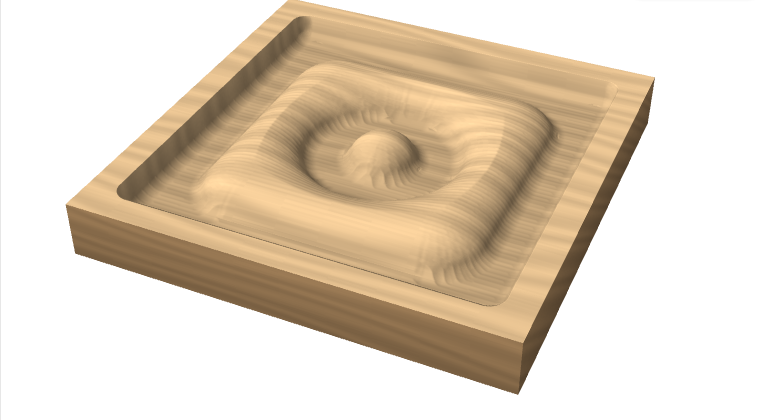
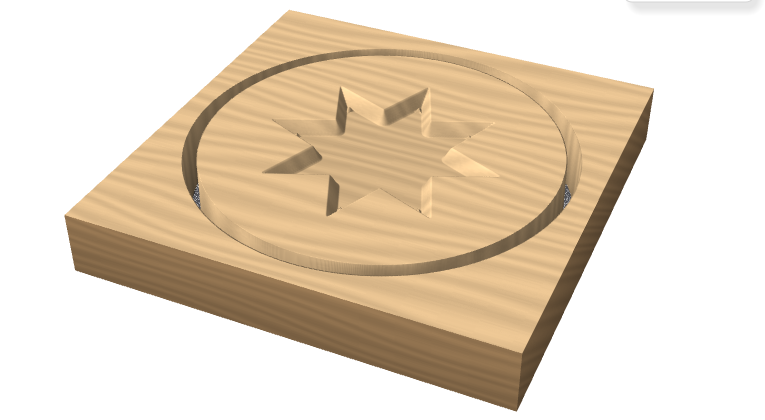
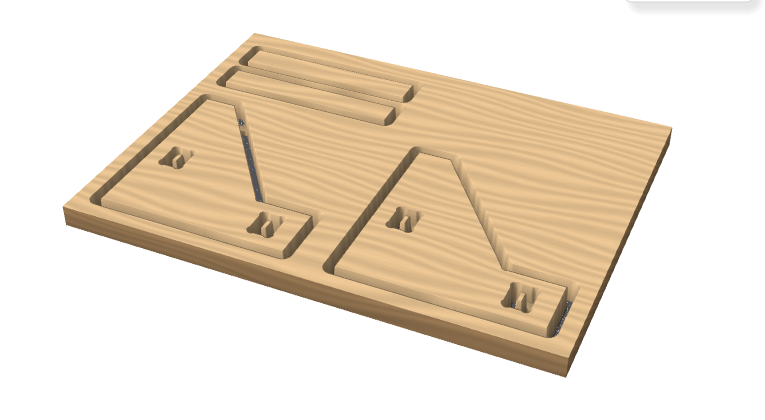
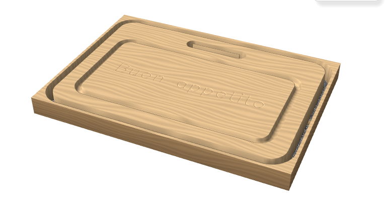
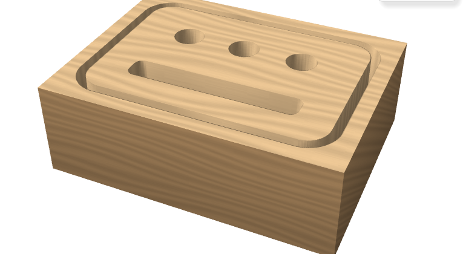

Name plate
A rounded plate cut out of the stock, with a shallow recess and the name engraved in its floor.
- Profile (outside) with holding tabs, 1/8″ flat end mill
- Pocket, 2 mm deep
- On the line: the lettering, 30° engraving bit
- Stock 200 × 150 × 12 mm

Finger-joint box
The five plates of an open box with interlocking fingers, laid out on one piece of 6 mm stock and cut in a single operation.
- Profile (outside) with four holding tabs, 1/8″ flat end mill
- Stock 200 × 150 × 6 mm

Oval sign
An oval sign with V-carved lettering, text along the top and bottom of the oval, and a fine engraved border.
- V-carve: the name, 60° V-bit
- V-carve: curved text, 30° engraving bit
- On the line: border; Profile (outside) for the oval
- Stock 260 × 170 × 15 mm

3D relief: rosette
A six-petal rosette carved as a 3D relief. The model is made by the program; your own STL or OBJ files work the same way.
- 3D relief: roughing, then a finishing pass that follows the surface, 1/4″ ball nose
- Stock 90 × 90 × 12 mm

3D relief from shapes
A cushion with a round groove and a button, made from three drawn shapes with Generate → Relief from shapes: no model file needed.
- 3D relief: roughing and finishing, 1/4″ ball nose
- Stock 90 × 90 × 12 mm

Inlay coaster
A round coaster with an eight-point star inlaid in it: the star is V-carved as a pocket, its plug is cut from a darker wood and glued in.
- Inlay pocket and plug, 60° V-bit with a 1/8″ flat end mill
- Profile (outside) with holding tabs
- Stock 120 × 120 × 18 mm, plug piece 6 mm

Phone stand
A phone or tablet stand that goes together without glue: two side plates and two crossbars whose ends fit slots with dogbone corners, cut from one sheet of plywood.
- Profile (outside) with holding tabs, 1/8″ flat end mill
- Dogbone reliefs in the slots
- Stock 200 × 150 × 9 mm

Cutting board
A hardwood cutting board with a round-bottomed juice groove, a hanging hole and a line of lettering.
- On the line: juice groove, 6 mm ball nose
- On the line: lettering, 30° engraving bit
- Profile (inside) for the hanging hole, Profile (outside) for the board, 6 mm flat end mill
- Stock 270 × 190 × 20 mm

Pen holder
A desk pen holder cut from a thick block: three round pen holes, a slot for cards and a rounded outline.
- Pocket: three 12 mm holes, 30 mm deep, entered in a spiral, 4 mm flat end mill
- Pocket: card slot, 22 mm deep
- Profile (outside) with holding tabs, 1/8″ flat end mill
- Stock 120 × 90 × 40 mm
Not installed yet? Download PutiaCNC. The first five projects are also in the program under Generate → Sample projects, made to fit your own machine and tools.